NUESTRAS CARRERAS
Una competencia, cuatro experiencias diferentes.
Hemos preparado cuatro carreras con características propias, inspiradas en la riqueza natural de nuestra región. Cada una cuenta con su identidad, recorrido y nivel de exigencia, ofreciendo a los ciclistas diferentes formas de poner a prueba sus habilidades.
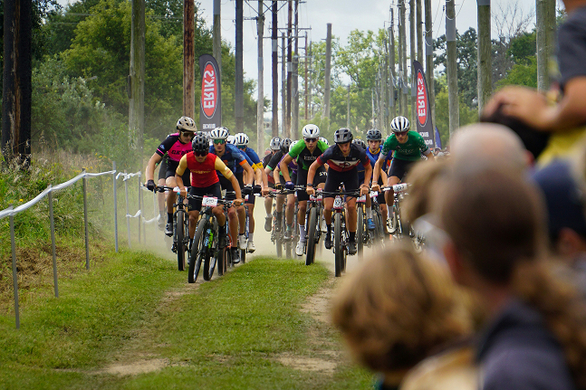
CARRERA 01 | EL QUETZAL
Primera carrera – El Quetzal
Libertad, agilidad y espíritu de superación.
Inspirada en la belleza y majestuosidad del quetzal, esta carrera representa la libertad, la elegancia y la conexión con la naturaleza. Su recorrido invita a los ciclistas a disfrutar cada kilómetro mientras ponen a prueba su resistencia, técnica y determinación. Un desafío donde la aventura y la pasión por el MTB se unen para conquistar nuevos caminos.
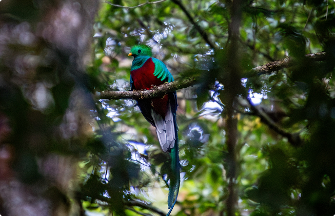
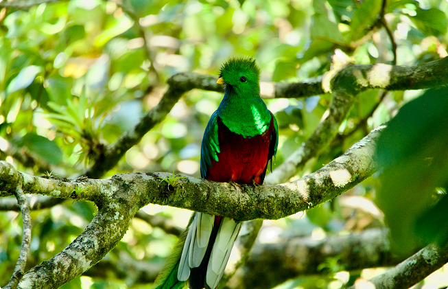
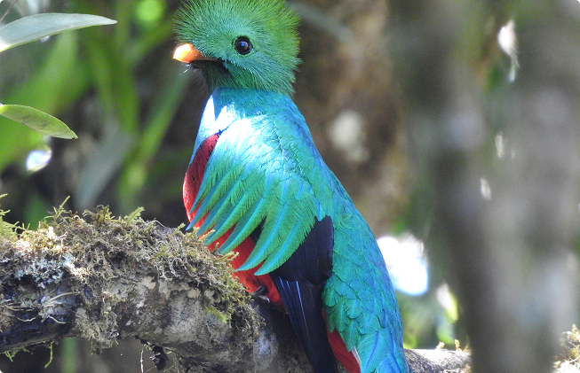
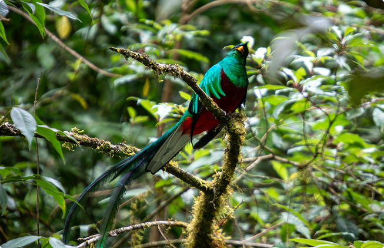
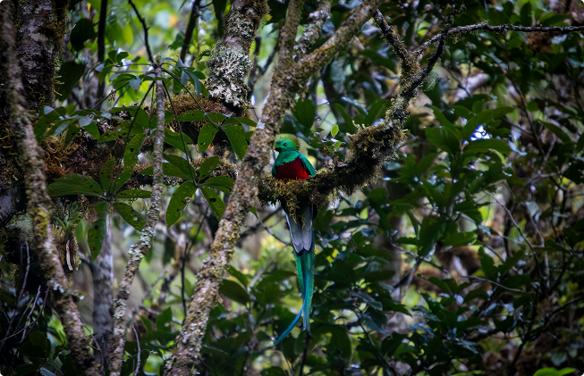
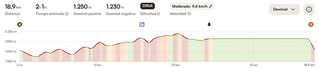
Distancia
18,9 km
Tiempo estimado
2 h
Desnivel negativo
1.230 m
Desnivel positivo
1.250 m
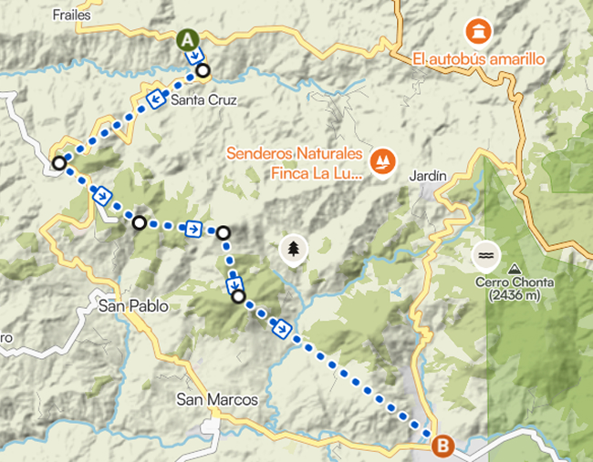
Nivel de dificultad
Difícil
Punto de salida y llegada
Santa Cruz - Santa María
Descripción y características del recorrido
Comienza con una subida constante hasta superar los 2.100 m de altitud, seguida por un tramo llano y constante entre el km 11 y km 18, finalizando con un descenso pronunciado.
Fecha Propuesta
18 de diciembre 2026
Hora de Salida
3:00 pm
Paso Clave / Corte
04:30 PM (km 11)
Llegada Est. Primeros
05:00 PM
Cierre de Meta
06:30 PM
CARRERA 02 | EL COYOTE
Segunda carrera – El Coyote
Agilidad, estrategia y espíritu aventurero.
Inspirada en la inteligencia y capacidad de adaptación del coyote, esta carrera representa la habilidad para enfrentar terrenos cambiantes y tomar decisiones en cada tramo. Un desafío donde la técnica, la velocidad y la concentración serán fundamentales para conquistar el recorrido.
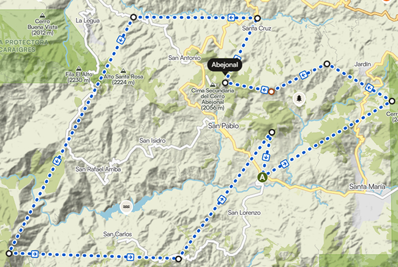
Nivel de dificultad
Difícil
Punto de salida y llegada
Santa Cruz - Santa María
Descripción y características del recorrido
Comienza con una subida constante hasta superar los 2.100 m de altitud, seguida por un tramo llano y constante entre el km 11 y km 18, finalizando con un descenso pronunciado.
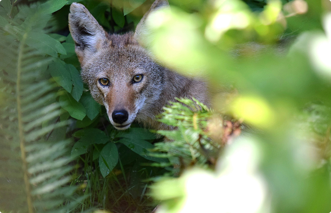
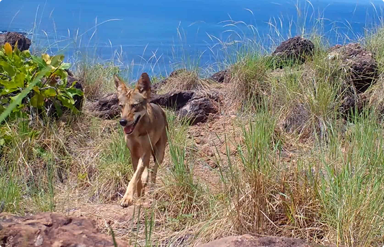
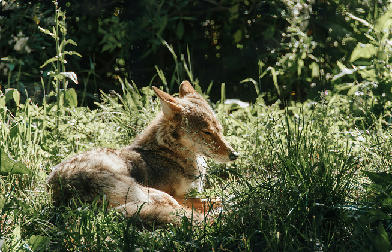
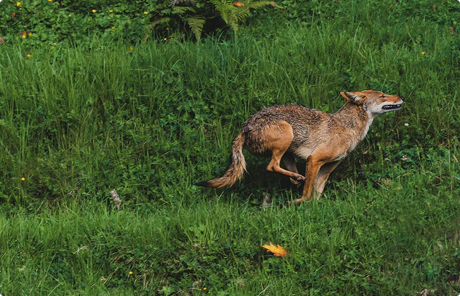
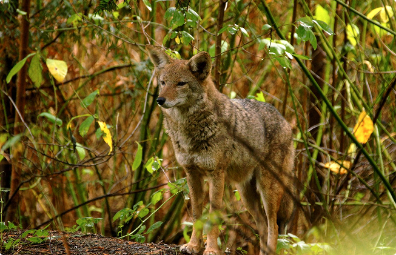
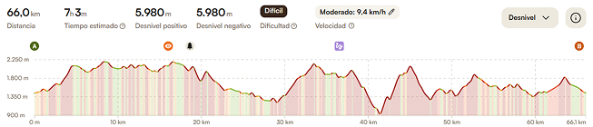
Distancia
18,9 km
Tiempo estimado
2 h
Desnivel negativo
1.230 m
Desnivel positivo
1.250 m
Fecha Propuesta
18 de diciembre 2026
Hora de Salida
6:00 am
Paso Clave / Corte
09:30 AM (km 33)
Llegada Est. Primeros
01:03 PM
Cierre de Meta
04:30 PM
CARRERA 03 | La Danta
Tercera carrera – La Danta
Fuerza, resistencia y perseverancia.
La danta representa la fortaleza y tranquilidad de quien avanza sin rendirse ante los obstáculos. Esta carrera desafía a los participantes a mantener su ritmo, superar sus propios límites y demostrar su resistencia a lo largo del recorrido. Una experiencia para quienes saben que cada kilómetro conquistado es una victoria personal.
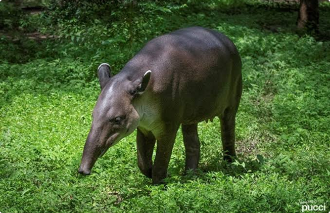
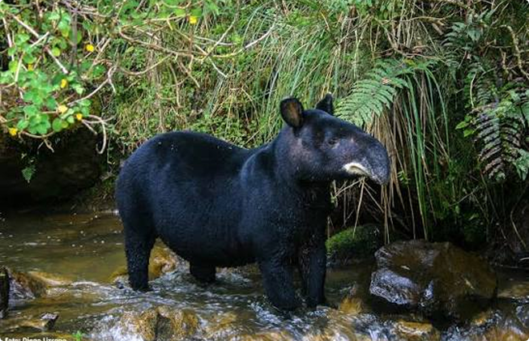
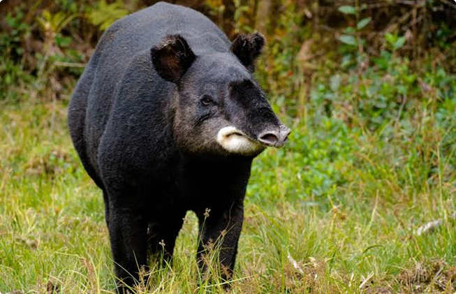
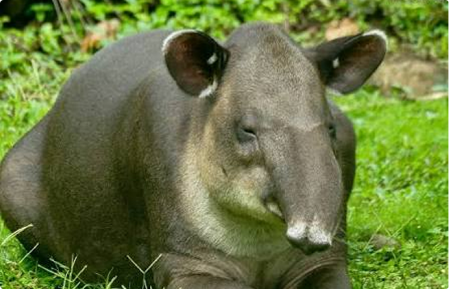
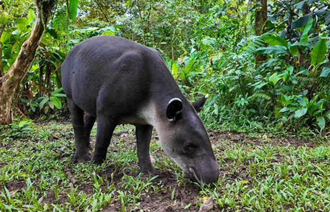
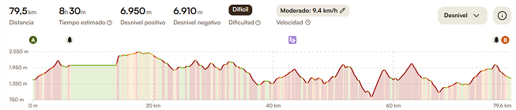
Distancia
79,5 km
Tiempo estimado
8 h 30 min
Desnivel negativo
6.910 m
Desnivel positivo
6.950 m
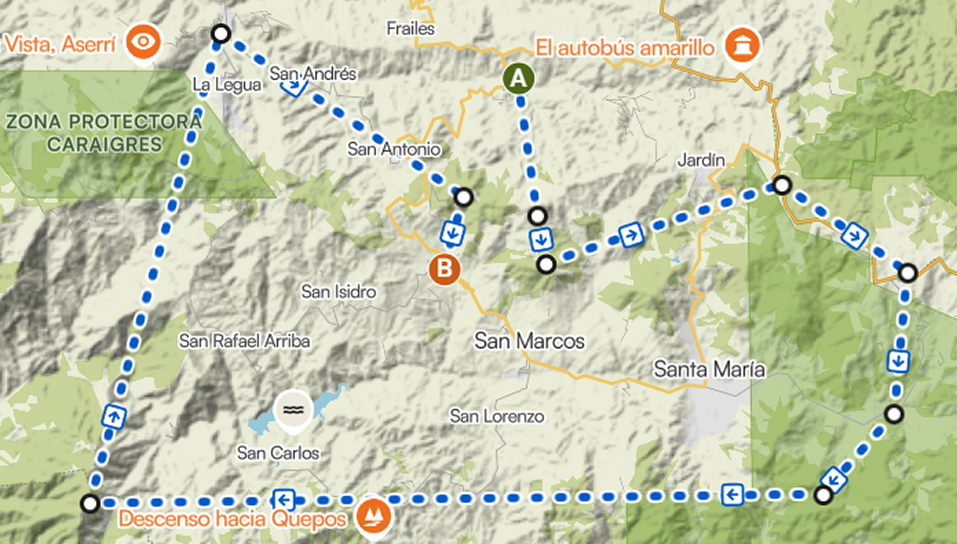
Nivel de dificultad
Difícil
Punto de salida y llegada
Santa Cruz - San Pablo
Descripción y características del recorrido
La etapa más larga y exigente. Inicia ascendiendo a cerca de 2.550 m de altitud, continúa con un segmento plano sostenido y luego presenta múltiples ascensos y descensos acumulados que bajan hasta los ~900 m antes de volver a subir
Fecha Propuesta
19 de diciembre 2026
Hora de Salida
05:30 AM
Paso Clave / Corte
09:30 AM (km 40 - Corte)
Llegada Est. Primeros
02:00 PM
Cierre de Meta
06:30 PM
CARRERA 04 | EL COLIBRÍ
Cuarta carrera – EL COLIBRÍ
Energía, velocidad y libertad para volar sobre los senderos.
Inspirada en la agilidad y ligereza del colibrí, esta carrera representa la capacidad de moverse con precisión y rapidez ante cada desafío. Un recorrido donde la velocidad, el equilibrio y la concentración serán fundamentales para superar cada tramo y alcanzar la meta.
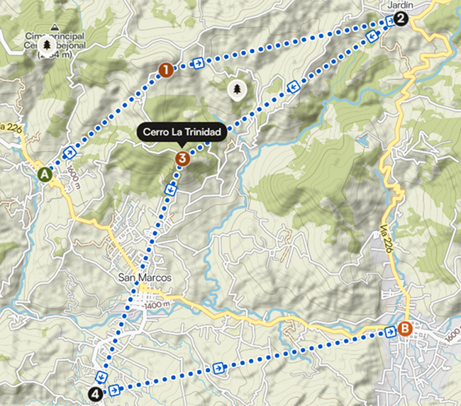
Nivel de dificultad
Difícil
Punto de salida y llegada
San Pablo - Santa María
Descripción y características del recorrido
Presenta un ascenso rápido inicial hacia los ~2.150 m, una meseta plana prolongada entre el km 8 y km 14, un descenso técnico pronunciado hasta los 1.350 m y un tramo final con pequeñas ondulaciones.
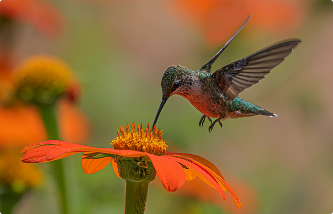
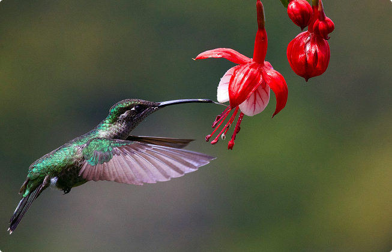
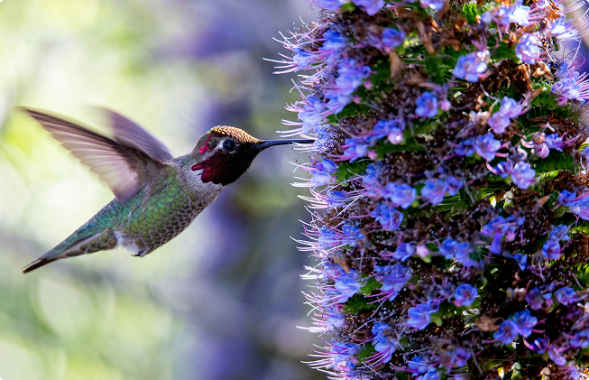
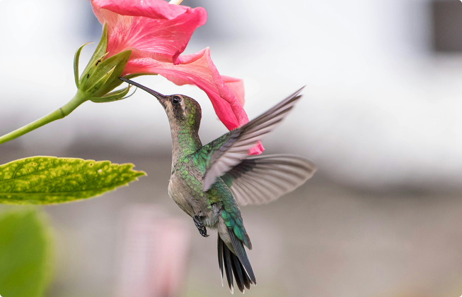
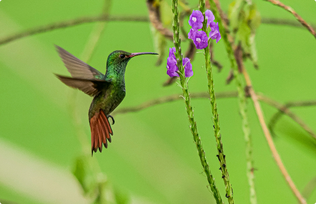
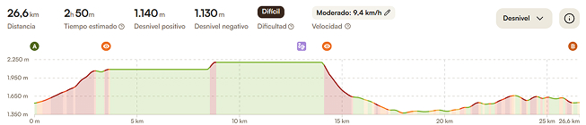
Distancia
26,6 km
Tiempo estimado
3 h
Desnivel negativo
1.130 m
Desnivel positivo
1.140 m
Fecha Propuesta
20 de diciembre 2026
Hora de Salida
07:30 AM
Paso Clave / Corte
09:00 AM (km 12)
Llegada Est. Primeros
10:20 AM
Cierre de Meta
12:00 PM